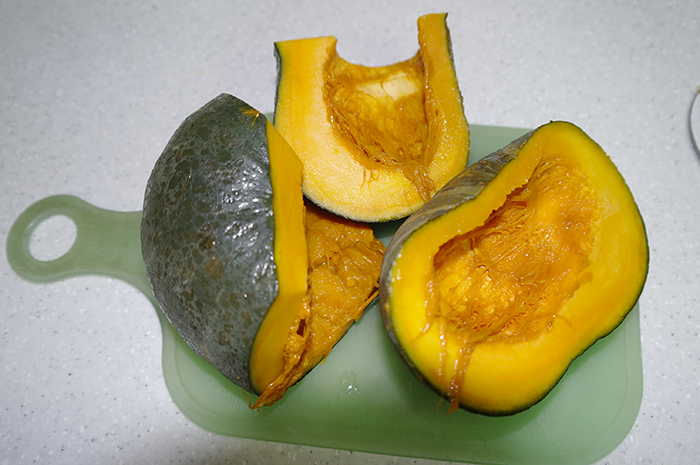
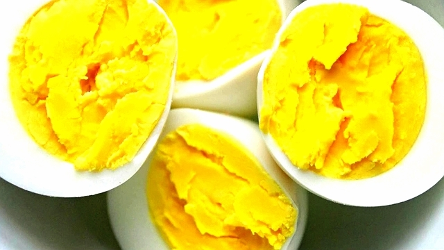
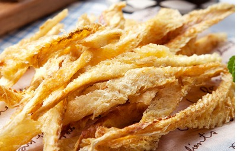

♥좋은 음식♥
강아지에게 좋은 음식을 소개해드리겠습니다!
강아지에게 좋은 음식 TOP 3
●단호박
- 효능：
- 섬유소가 풍부해 변비에 도움을 주며, 칼로리가 낮아 비만견에게 좋아요. 스트레스 해소에 좋은 칼륨도 풍부해요.
- Tip：
- *익혀서 주고, 호박씨는 NO!!*
●달걀 노른자
- 효능：
- 고단백 식품으로, 강아지의 대표 보양식! 수술 후 or 출산견의 체력회복에 좋으며, 감기나 구토 증상 완화에도 도움이 된다고 해요.
- Tip：
- *꼭 익혀서 주세요!*
●북어
- 효능：
- 출산견, 수유견에게 특히 좋은 강아지 보양식! 피를 맑게 해주며, 파보장염에 좋다고 해요.
- Tip：
- 물에 담가두기를 2~3번 반복해서 염분을 제거한 후, 가시를 꼭! 제거하고 잘게 다져서 물과 함께 끓여주시면 돼요.